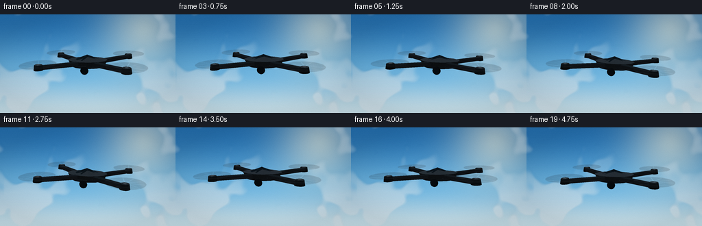
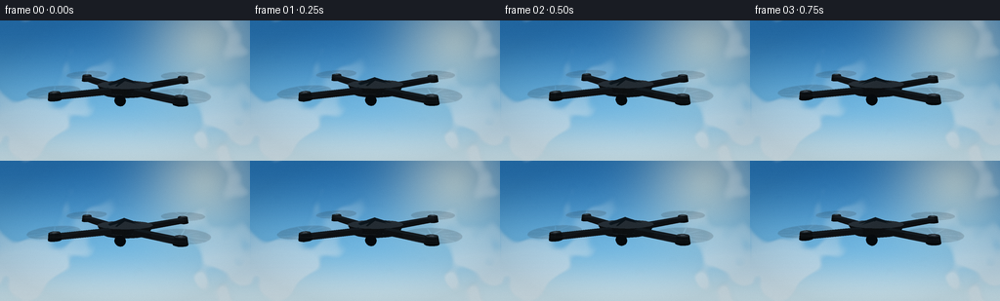

CODING AGENTS AS PIXEL WORLD MODELS
traex/DeepSeek-V4.1-Flash · instance_preservation_0041
点击播放 · 原生 RGB 像素
逐轮保存的候选
回放视频、检查图与代码变化。
每份候选均可单独播放。实际图片检查记录在下方工具轨迹中。
候选 01播放与检查图
点击播放 · 原生 RGB 像素


展开代码变化
--- 上一保存版本
+++ 本次保存版本
@@ -0,0 +1,489 @@
+from __future__ import annotations
+
+import math
+from pathlib import Path
+
+import numpy as np
+from PIL import Image, ImageDraw, ImageFilter
+from scipy.ndimage import gaussian_filter, zoom
+
+import artifact_io
+
+
+ROOT = Path(__file__).resolve().parent
+W, H = 256, 144
+FRAMES = 20
+FPS = 4.0
+SS = 4
+RW, RH = W * SS, H * SS
+
+
+def unit(v: np.ndarray) -> np.ndarray:
+ return v / np.maximum(np.linalg.norm(v, axis=-1, keepdims=True), 1e-8)
+
+
+def smoothstep(edge0: float, edge1: float, x: np.ndarray) -> np.ndarray:
+ t = np.clip((x - edge0) / (edge1 - edge0), 0.0, 1.0)
+ return t * t * (3.0 - 2.0 * t)
+
+
+def rotation_matrix(yaw: float, pitch: float, roll: float) -> np.ndarray:
+ cy, sy = math.cos(yaw), math.sin(yaw)
+ cp, sp = math.cos(pitch), math.sin(pitch)
+ cr, sr = math.cos(roll), math.sin(roll)
+ ry = np.array([[cy, 0.0, sy], [0.0, 1.0, 0.0], [-sy, 0.0, cy]])
+ rx = np.array([[1.0, 0.0, 0.0], [0.0, cp, -sp], [0.0, sp, cp]])
+ rz = np.array([[cr, -sr, 0.0], [sr, cr, 0.0], [0.0, 0.0, 1.0]])
+ return ry @ rx @ rz
+
+
+def make_cloud_texture() -> np.ndarray:
+ rng = np.random.default_rng(1947)
+ base = rng.normal(size=(RH // 8, RW // 8)).astype(np.float32)
+ layers = []
+ for sigma, weight in ((3.0, 0.52), (7.0, 0.31), (14.0, 0.17)):
+ layer = gaussian_filter(base, sigma=sigma, mode="wrap")
+ layer = (layer - layer.min()) / (layer.max() - layer.min())
+ layers.append(weight * layer)
+ field = sum(layers)
+ field = zoom(field, (RH / field.shape[0], RW / field.shape[1]), order=3)[:RH, :RW]
+ field = gaussian_filter(field, sigma=5.5, mode="wrap")
+ field = (field - np.percentile(field, 17)) / (
+ np.percentile(field, 96) - np.percentile(field, 17)
+ )
+ field = np.clip(field, 0.0, 1.0)
+
+ yy, xx = np.mgrid[0:RH, 0:RW]
+ y = yy / (RH - 1)
+ x = xx / (RW - 1)
+ # Keep the center clean while preserving a deep, atmospheric cloudscape.
+ envelope = (
+ 0.15
+ + 0.78 * smoothstep(0.48, 0.95, y)
+ + 0.42 * np.exp(-((x - 0.12) / 0.25) ** 2)
+ + 0.33 * np.exp(-((x - 0.90) / 0.22) ** 2)
+ )
+ wisps = smoothstep(0.48, 0.82, field) * envelope
+ wisps = np.clip(wisps, 0.0, 0.78)
+ wisps = gaussian_filter(wisps, sigma=2.0)
+ return wisps.astype(np.float32)
+
+
+def make_sky() -> tuple[np.ndarray, np.ndarray]:
+ yy, xx = np.mgrid[0:RH, 0:RW].astype(np.float32)
+ y = yy / (RH - 1)
+ x = xx / (RW - 1)
+
+ top = np.array([37.0, 113.0, 177.0])
+ middle = np.array([104.0, 179.0, 224.0])
+ low = np.array([199.0, 226.0, 237.0])
+ upper_mix = smoothstep(0.0, 0.68, y)[..., None]
+ lower_mix = smoothstep(0.60, 1.0, y)[..., None]
+ sky = top * (1.0 - upper_mix) + middle * upper_mix
+ sky = sky * (1.0 - lower_mix) + low * lower_mix
+
+ # A low, diffused sun at frame right gives the black shell readable highlights.
+ sun_x, sun_y = 0.82 * RW, 0.15 * RH
+ dist = np.sqrt((xx - sun_x) ** 2 + (yy - sun_y) ** 2)
+ glow = np.exp(-(dist / (0.24 * RW)) ** 2) * 0.54
+ core = np.exp(-(dist / (0.060 * RW)) ** 2) * 0.42
+ warm = np.array([255.0, 246.0, 220.0])
+ sky = sky * (1.0 - glow[..., None]) + warm * glow[..., None]
+ sky += core[..., None] * np.array([18.0, 12.0, 4.0])
+
+ # Gentle aerial haze keeps the image from reading as a flat digital gradient.
+ haze = np.exp(-((y - 0.84) / 0.30) ** 2)[..., None]
+ sky = sky * (1.0 - 0.16 * haze) + np.array([218.0, 232.0, 237.0]) * 0.16 * haze
+ return np.clip(sky, 0, 255).astype(np.uint8), make_cloud_texture()
+
+
+def background_frame(base_sky: np.ndarray, clouds: np.ndarray, frame_index: int) -> Image.Image:
+ shift = int(round(frame_index * 0.55 * SS))
+ shifted = np.roll(clouds, shift, axis=1)
+ shadow = np.roll(shifted, -6, axis=0)
+ cloud_rgb = np.array([231.0, 239.0, 243.0], dtype=np.float32)
+ shade_rgb = np.array([166.0, 192.0, 209.0], dtype=np.float32)
+ alpha = shifted[..., None]
+ image = base_sky.astype(np.float32)
+ image = image * (1.0 - 0.25 * alpha) + shade_rgb * (0.25 * alpha)
+ image = image * (1.0 - 0.58 * alpha) + cloud_rgb * (0.58 * alpha)
+ # Cloud undersides catch a small amount of neutral shadow.
+ underside = np.clip(shadow - shifted, 0.0, 0.5)[..., None]
+ image -= underside * np.array([18.0, 15.0, 12.0])
+ return Image.fromarray(np.clip(image, 0, 255).astype(np.uint8), "RGB")
+
+
+class Renderer:
+ def __init__(self) -> None:
+ self.camera = np.array([2.45, 1.58, 6.35], dtype=np.float64)
+ self.target = np.array([0.0, 0.03, 0.0], dtype=np.float64)
+ forward = unit(self.target - self.camera)
+ right = unit(np.cross(forward, np.array([0.0, 1.0, 0.0])))
+ up = unit(np.cross(right, forward))
+ self.basis = np.stack([right, up, forward])
+ self.focal = 1110.0
+ self.light = unit(np.array([-0.48, 0.76, -0.44]))
+ self.offset = np.zeros(3, dtype=np.float64)
+
+ def project(self, points: np.ndarray, transform: np.ndarray) -> tuple[np.ndarray, np.ndarray]:
+ world = points @ transform.T + self.offset
+ rel = world - self.camera
+ cam = rel @ self.basis.T
+ depth = np.maximum(cam[:, 2], 0.2)
+ sx = RW * 0.5 + self.focal * cam[:, 0] / depth
+ sy = RH * 0.49 - self.focal * cam[:, 1] / depth
+ return np.stack([sx, sy], axis=1), depth
+
+ def shade(self, color: np.ndarray, normal: np.ndarray, rim: float = 0.0) -> tuple[int, int, int]:
+ n = unit(normal)
+ diffuse = max(0.0, float(np.dot(n, self.light)))
+ sky_fill = 0.20 + 0.13 * max(0.0, n[1])
+ brightness = 0.27 + 0.64 * diffuse + sky_fill + rim
+ rgb = color * brightness
+ rgb += np.array([4.0, 7.0, 10.0]) * (0.35 + 0.65 * max(0.0, n[1]))
+ return tuple(int(np.clip(v, 0, 255)) for v in rgb)
+
+ def add_mesh(
+ self,
+ commands: list,
+ vertices: np.ndarray,
+ faces: list[tuple[int, ...]],
+ colors: list[np.ndarray] | np.ndarray,
+ transform: np.ndarray,
+ rim: float = 0.0,
+ ) -> None:
+ projected, depth = self.project(vertices, transform)
+ for face_index, face in enumerate(faces):
+ idx = np.asarray(face, dtype=int)
+ pts = projected[idx]
+ if np.max(pts[:, 0]) < -30 or np.min(pts[:, 0]) > RW + 30:
+ continue
+ if np.max(pts[:, 1]) < -30 or np.min(pts[:, 1]) > RH + 30:
+ continue
+ world = vertices[idx] @ transform.T
+ normal = np.cross(world[1] - world[0], world[2] - world[0])
+ center = world.mean(axis=0)
+ if np.dot(normal, self.camera - center) < 0:
+ normal = -normal
+ base = colors[face_index] if isinstance(colors, list) else colors
+ color = self.shade(base, normal, rim)
+ commands.append((float(depth[idx].mean()), "face", pts, color))
+
+ def build_drone(self, transform: np.ndarray, frame_index: int) -> list:
+ commands: list = []
+
+ # Faceted central chassis: a broad upper shell with a tapered lower shell.
+ segments = 14
+ angles = np.linspace(0.0, 2.0 * math.pi, segments, endpoint=False)
+ upper = np.stack(
+ [
+ 0.73 * np.cos(angles),
+ np.full_like(angles, 0.13),
+ 0.49 * np.sin(angles),
+ ],
+ axis=1,
+ )
+ lower = np.stack(
+ [
+ 0.60 * np.cos(angles),
+ np.full_like(angles, -0.11),
+ 0.41 * np.sin(angles),
+ ],
+ axis=1,
+ )
+ top_center = np.array([[0.0, 0.22, 0.0]])
+ bottom_center = np.array([[0.0, -0.18, 0.0]])
+ body_vertices = np.vstack([upper, lower, top_center, bottom_center])
+ top_i = 2 * segments
+ bottom_i = 2 * segments + 1
+ faces: list[tuple[int, ...]] = []
+ colors: list[np.ndarray] = []
+ for i in range(segments):
+ j = (i + 1) % segments
+ faces.append((i, j, segments + j, segments + i))
+ side_tone = 0.74 + 0.26 * (0.5 + 0.5 * math.sin(angles[i] + 0.8))
+ colors.append(np.array([22.0, 26.0, 29.0]) * side_tone)
+ for i in range(segments):
+ j = (i + 1) % segments
+ faces.append((i, top_i, j))
+ colors.append(np.array([31.0, 36.0, 40.0]))
+ for i in range(segments):
+ j = (i + 1) % segments
+ faces.append((segments + i, segments + j, bottom_i))
+ colors.append(np.array([13.0, 16.0, 18.0]))
+ self.add_mesh(commands, body_vertices, faces, colors, transform, rim=0.035)
+
+ # Dark glass canopy, deliberately low and compact.
+ canopy_angles = np.linspace(0.0, 2.0 * math.pi, 16, endpoint=False)
+ ring = np.stack(
+ [
+ 0.43 * np.cos(canopy_angles),
+ np.full_like(canopy_angles, 0.16),
+ 0.31 * np.sin(canopy_angles) + 0.04,
+ ],
+ axis=1,
+ )
+ crown = np.array([[0.0, 0.32, 0.05]])
+ canopy_vertices = np.vstack([ring, crown])
+ canopy_faces = []
+ canopy_colors = []
+ for i in range(16):
+ j = (i + 1) % 16
+ canopy_faces.append((i, j, 16))
+ canopy_colors.append(np.array([8.0, 14.0, 18.0]))
+ self.add_mesh(commands, canopy_vertices, canopy_faces, canopy_colors, transform, rim=0.12)
+
+ # Thin body accent around the nose, a recognizable drone detail.
+ nose_ring = np.stack(
+ [
+ 0.30 * np.cos(np.linspace(0, 2 * math.pi, 18, endpoint=False)),
+ np.full(18, -0.01),
+ 0.39 + 0.10 * np.sin(np.linspace(0, 2 * math.pi, 18, endpoint=False)),
+ ],
+ axis=1,
+ )
+ nose_ring2 = nose_ring.copy()
+ nose_ring2[:, 2] += 0.055
+ nose_ring2[:, 0] *= 0.92
+ nose_ring2[:, 1] += 0.015
+ nv = np.vstack([nose_ring, nose_ring2])
+ nf = []
+ nc = []
+ for i in range(18):
+ j = (i + 1) % 18
+ nf.append((i, j, 18 + j, 18 + i))
+ nc.append(np.array([24.0, 29.0, 33.0]))
+ self.add_mesh(commands, nv, nf, nc, transform, rim=0.045)
+
+ # Camera gimbal and lens under the nose.
+ lens_center = np.array([0.0, -0.14, 0.55])
+ lens_ring = np.stack(
+ [
+ lens_center[0] + 0.14 * np.cos(np.linspace(0, 2 * math.pi, 16, endpoint=False)),
+ lens_center[1] + 0.14 * np.sin(np.linspace(0, 2 * math.pi, 16, endpoint=False)),
+ np.full(16, lens_center[2]),
+ ],
+ axis=1,
+ )
+ lens_front = np.stack(
+ [
+ lens_center[0] + 0.09 * np.cos(np.linspace(0, 2 * math.pi, 16, endpoint=False)),
+ lens_center[1] + 0.09 * np.sin(np.linspace(0, 2 * math.pi, 16, endpoint=False)),
+ np.full(16, lens_center[2] + 0.035),
+ ],
+ axis=1,
+ )
+ lv = np.vstack([lens_ring, lens_front])
+ lf = []
+ lc = []
+ for i in range(16):
+ j = (i + 1) % 16
+ lf.append((i, j, 16 + j, 16 + i))
+ lc.append(np.array([8.0, 10.0, 12.0]))
+ self.add_mesh(commands, lv, lf, lc, transform, rim=0.04)
+ self.add_mesh(
+ commands,
+ lens_front,
+ [tuple(range(16))],
+ [np.array([7.0, 12.0, 16.0])],
+ transform,
+ rim=0.18,
+ )
+
+ # Four diagonal arms and motor pods.
+ rotor_positions = []
+ for side_x, side_z in ((-1, -1), (1, -1), (-1, 1), (1, 1)):
+ start = np.array([0.34 * side_x, 0.01, 0.23 * side_z])
+ end = np.array([1.43 * side_x, 0.055, 1.06 * side_z])
+ rotor_positions.append((end.copy(), side_x, side_z))
+ arm = end - start
+ direction = unit(arm)
+ across = unit(np.cross(np.array([0.0, 1.0, 0.0]), direction))
+ up = unit(np.cross(direction, across))
+ width = 0.105
+ height = 0.062
+ corners = np.array(
+ [
+ start - across * width - up * height,
+ start + across * width - up * height,
+ start + across * width + up * height,
+ start - across * width + up * height,
+ end - across * (width * 0.78) - up * height,
+ end + across * (width * 0.78) - up * height,
+ end + across * (width * 0.78) + up * height,
+ end - across * (width * 0.78) + up * height,
+ ]
+ )
+ arm_faces = [
+ (0, 1, 5, 4),
+ (1, 2, 6, 5),
+ (2, 3, 7, 6),
+ (3, 0, 4, 7),
+ (4, 5, 6, 7),
+ ]
+ arm_colors = [
+ np.array([19.0, 22.0, 24.0]),
+ np.array([28.0, 32.0, 35.0]),
+ np.array([14.0, 17.0, 19.0]),
+ np.array([24.0, 28.0, 31.0]),
+ np.array([34.0, 39.0, 43.0]),
+ ]
+ self.add_mesh(commands, corners, arm_faces, arm_colors, transform, rim=0.035)
+
+ # Motor pod.
+ pod_angles = np.linspace(0.0, 2.0 * math.pi, 14, endpoint=False)
+ pod_bottom = np.stack(
+ [
+ end[0] + 0.16 * np.cos(pod_angles),
+ np.full_like(pod_angles, end[1] - 0.07),
+ end[2] + 0.16 * np.sin(pod_angles),
+ ],
+ axis=1,
+ )
+ pod_top = pod_bottom.copy()
+ pod_top[:, 1] = end[1] + 0.10
+ pod_top[:, 0] = end[0] + 0.13 * np.cos(pod_angles)
+ pod_top[:, 2] = end[2] + 0.13 * np.sin(pod_angles)
+ pv = np.vstack([pod_bottom, pod_top])
+ pf = []
+ pc = []
+ for i in range(14):
+ j = (i + 1) % 14
+ pf.append((i, j, 14 + j, 14 + i))
+ pc.append(np.array([12.0, 15.0, 17.0]))
+ pf.append(tuple(range(14, 28)))
+ pc.append(np.array([26.0, 31.0, 34.0]))
+ self.add_mesh(commands, pv, pf, pc, transform, rim=0.05)
+
+ # Small hub.
+ hub = np.stack(
+ [
+ end[0] + 0.052 * np.cos(pod_angles),
+ np.full_like(pod_angles, end[1] + 0.105),
+ end[2] + 0.052 * np.sin(pod_angles),
+ ],
+ axis=1,
+ )
+ self.add_mesh(
+ commands,
+ hub,
+ [tuple(range(14))],
+ [np.array([54.0, 61.0, 66.0])],
+ transform,
+ rim=0.10,
+ )
+
+ return commands, rotor_positions
+
+ def draw_rotors(
+ self,
+ canvas: Image.Image,
+ rotor_positions: list,
+ transform: np.ndarray,
+ frame_index: int,
+ ) -> None:
+ overlay = Image.new("RGBA", (RW, RH), (0, 0, 0, 0))
+ draw = ImageDraw.Draw(overlay, "RGBA")
+ t = frame_index / FPS
+
+ for rotor_index, (center, side_x, side_z) in enumerate(rotor_positions):
+ plane_y = center[1] + 0.12
+ radius = 0.60
+ angles = np.linspace(0.0, 2.0 * math.pi, 48, endpoint=False)
+ rim = np.stack(
+ [
+ center[0] + radius * np.cos(angles),
+ np.full_like(angles, plane_y),
+ center[2] + radius * np.sin(angles),
+ ],
+ axis=1,
+ )
+ rim_pts, _ = self.project(rim, transform)
+ polygon = [tuple(p) for p in rim_pts]
+ draw.polygon(polygon, fill=(27, 34, 40, 44), outline=(106, 120, 131, 78))
+
+ # Ghosted blade positions approximate the smear visible at 4 fps.
+ spin = 2.0 * math.pi * (7.0 * t + 0.19 * rotor_index)
+ for ghost in range(10):
+ angle = spin + ghost * (math.pi / 5.0)
+ for blade_offset in (0.0, math.pi):
+ a = angle + blade_offset
+ root = np.array([center[0], plane_y, center[2]])
+ tip = root + np.array([0.57 * math.cos(a), 0.0, 0.57 * math.sin(a)])
+ side = np.array([-math.sin(a), 0.0, math.cos(a)]) * 0.043
+ blade = np.stack(
+ [
+ root + side * 0.45,
+ tip + side * 0.15,
+ tip - side * 0.15,
+ root - side * 0.45,
+ ]
+ )
+ pts, _ = self.project(blade, transform)
+ alpha = 30 if ghost % 2 == 0 else 22
+ draw.polygon([tuple(p) for p in pts], fill=(66, 76, 83, alpha))
+
+ # A faint cool glint makes the rotor disk readable against the sky.
+ draw.line(
+ [tuple(rim_pts[6]), tuple(rim_pts[18])],
+ fill=(168, 184, 193, 32),
+ width=max(1, SS // 2),
+ )
+
+ overlay = overlay.filter(ImageFilter.GaussianBlur(radius=1.1))
+ canvas.paste(overlay, (0, 0), overlay)
+
+ def render(self, background: Image.Image, frame_index: int) -> Image.Image:
+ t = frame_index / FPS
+ bob = 0.045 * math.sin(2.0 * math.pi * 0.34 * t + 0.4)
+ sway = 0.035 * math.sin(2.0 * math.pi * 0.21 * t)
+ yaw = math.radians(8.0 + 2.0 * math.sin(2.0 * math.pi * 0.23 * t + 0.15))
+ pitch = math.radians(1.8 * math.sin(2.0 * math.pi * 0.39 * t + 0.8))
+ roll = math.radians(1.5 * math.sin(2.0 * math.pi * 0.27 * t + 1.1))
+ transform = rotation_matrix(yaw, pitch, roll)
+ transform[:, 0] *= 1.0
+ transform = transform.copy()
+ world_transform = transform
+ self.offset = np.array([sway, bob, 0.0])
+ commands, rotor_positions = self.build_drone(world_transform, frame_index)
+
+ canvas = background.copy()
+ draw = ImageDraw.Draw(canvas, "RGB")
+ for depth, kind, pts, color in sorted(commands, key=lambda item: item[0], reverse=True):
+ if kind == "face":
+ draw.polygon([tuple(p) for p in pts], fill=color)
+ draw.line([tuple(p) for p in np.vstack([pts, pts[:1]])], fill=color, width=1)
+
+ self.draw_rotors(canvas, rotor_positions, world_transform, frame_index)
+ self.offset = np.zeros(3, dtype=np.float64)
+ return canvas
+
+
+def add_finish(image: Image.Image, frame_index: int) -> np.ndarray:
+ arr = np.asarray(image.resize((W, H), Image.Resampling.LANCZOS)).astype(np.float32)
+ yy, xx = np.mgrid[0:H, 0:W].astype(np.float32)
+ nx = (xx - W * 0.5) / (W * 0.5)
+ ny = (yy - H * 0.5) / (H * 0.5)
+ vignette = np.clip(1.0 - 0.085 * (nx * nx + ny * ny), 0.9, 1.0)
+ arr *= vignette[..., None]
+
+ # Very light grain avoids banding in the sky without looking noisy at 256 px.
+ rng = np.random.default_rng(7100 + frame_index)
+ grain = rng.normal(0.0, 0.55, size=(H, W, 1)).astype(np.float32)
+ arr += grain
+ return np.clip(arr, 0, 255).astype(np.uint8)
+
+
+def main() -> None:
+ sky, clouds = make_sky()
+ renderer = Renderer()
+ frames = []
+ for frame_index in range(FRAMES):
+ background = background_frame(sky, clouds, frame_index)
+ high_res = renderer.render(background, frame_index)
+ frames.append(add_finish(high_res, frame_index))
+ artifact_io.save(frames, ROOT)
+
+
+if __name__ == "__main__":
+ main()
可观测工具轨迹
实际执行的命令与返回图片。
命令 1exit 0
/bin/bash -c 'cat prompt.txt'
命令 2exit 0
/bin/bash -c 'cat GENERATION_RULES.md'
命令 3exit 0
/bin/bash -c 'cat task_spec.json'
命令 4exit 0
/bin/bash -c "find . -maxdepth 2 -type f -printf '%p %s bytes\\n' | sort"
命令 5exit 0
/bin/bash -c 'cat artifact_io.py'
命令 6exit 0
/bin/bash -c 'cat player_template.html'
命令 7exit 0
/bin/bash -c 'which ffmpeg || true; which convert || true; which magick || true'
命令 8exit 0
/bin/bash -c "python - <<'PY' import sys print(sys.version) for name in ['numpy','PIL','cv2','imageio','matplotlib','scipy','torch']: try: m=__import__(name) print(name, getattr(m,'__version__','ok')) except Exception as e: print(name, 'MISSING', type(e).__name__) PY"
命令 9exit 1
/bin/bash -c 'MPLCONFIGDIR=.tmp/mpl python generate.py'
命令 10exit 0
/bin/bash -c 'MPLCONFIGDIR=.tmp/mpl python generate.py'
命令 11exit 0
/bin/bash -c "ls -lh inspection.png frames/00.png frames/10.png pixels.npz index.html && python - <<'PY'
from PIL import Image
im=Image.open('inspection.png')
print('inspection', im.size)
im.crop((0,0,1024,330)).save('.tmp/inspection_crop.png')
PY"命令 12exit 0
/bin/bash -c 'which chafa || true; which viu || true; which img2txt || true; which jp2 || true; which viu || true; which timg || true'
命令 13exit 0
/bin/bash -c "python - <<'PY'
from PIL import Image
import numpy as np
for i in [0,5,10,15,19]:
a=np.array(Image.open(f'frames/{i:02d}.png')).astype(float)
lum=a.mean(2)
dark=lum<75
print(i, 'rgbmean', np.round(a.mean((0,1)),1), 'dark%', round(dark.mean()*100,2), 'bbox', end=' ')
ys,xs=np.where(dark)
print((xs.min(),ys.min(),xs.max(),ys.max()) if len(xs) else None, 'range', (round(lum.min()),round(lum.max())))
PY"命令 14exit 0
/bin/bash -c "python - <<'PY'
from PIL import Image
import numpy as np
im=Image.open('frames/00.png').resize((64,36),Image.Resampling.LANCZOS)
a=np.array(im).astype(float)
l=a.mean(2)
chars=' .,:;irsXA253hMHGS#9B&@'
for row in l:
print(''.join(chars[min(len(chars)-1,int(v/256*len(chars)))] for v in row))
PY"命令 15exit 0
/bin/bash -c "python - <<'PY'
from PIL import Image
import numpy as np
for i in [0,1,2,10,11,19]:
a=np.array(Image.open(f'frames/{i:02d}.png')).astype(float)
# coarse sky-aware drone occupancy: pixels clearly darker than local 31x31 blur
from scipy.ndimage import uniform_filter
lum=a.mean(2)
bg=uniform_filter(lum, size=31)
mask=(bg-lum)>28
ys,xs=np.where(mask)
print(i, mask.sum(), (xs.min(),ys.min(),xs.max(),ys.max()) if len(xs) else None, 'center', (round(xs.mean(),1),round(ys.mean(),1)) if len(xs) else None)
PY"命令 16exit 0
/bin/bash -c "python - <<'PY'
from PIL import Image
import numpy as np
im=Image.open('frames/00.png').crop((38,44,205,100)).resize((83,28),Image.Resampling.LANCZOS)
a=np.array(im).astype(float).mean(2)
chars=' .:-=+*#%@'
for row in a:
print(''.join(chars[min(9,int(v/256*10))] for v in row))
PY"命令 17exit 0
/bin/bash -c "python - <<'PY'
from PIL import Image
import numpy as np
# print a sharp 1-bit-ish silhouette, ignoring subtle sky texture
im=Image.open('frames/00.png').crop((40,48,205,98))
a=np.array(im).astype(float).mean(2)
from scipy.ndimage import uniform_filter
bg=uniform_filter(a,size=25)
m=(bg-a)>36
chars=' .:-=+*#%@'
for y in range(0,a.shape[0],2):
line=''
for x in range(0,a.shape[1],2):
v=m[y:y+2,x:x+2].mean()
line += chars[min(9,int(v*9.99))]
print(line)
PY"命令 18exit 0
/bin/bash -c "python - <<'PY'
from PIL import Image
import numpy as np
from scipy.ndimage import uniform_filter
for f in [0,10,19]:
a=np.array(Image.open(f'frames/{f:02d}.png')).astype(float).mean(2)
b=uniform_filter(a,size=31)
m=(b-a)>28
# run lengths in middle rows to see dark strip / rotor ring
print('frame',f)
for y in range(52,94,4):
runs=[]; on=False
for x,v in enumerate(m[y]):
if v and not on: s=x; on=True
if on and (not v or x==255):
e=x-1 if not v else x
if e-s>=2:runs.append((s,e))
on=False
print(y,runs)
PY"命令 19exit 0
/bin/bash -c "python - <<'PY'
from PIL import Image
import numpy as np
for f in [0,10,19]:
im=Image.open(f'frames/{f:02d}.png')
im.resize((1024,576),Image.Resampling.NEAREST).save(f'.tmp/frame{f:02d}_4x.png')
# 64x36 color blocks with color labels
a=np.array(im.resize((64,36),Image.Resampling.NEAREST))
# foreground classification based on known geometry location and darkness
lum=a.mean(2)
# dump 0..255 coarse quantized lum around drone
print('\\nFRAME',f)
for y in range(12,24):
print(''.join(' .:-=+*#%@'[min(9,int(lum[y,x]/256*10))] for x in range(10,54)))
PY"命令 20exit 0
/bin/bash -c "python - <<'PY'
from PIL import Image
import numpy as np
from scipy.ndimage import uniform_filter
for f in [0,1,2,3,4,5,10,15,19]:
a=np.array(Image.open(f'frames/{f:02d}.png')).astype(np.float32)
l=a.mean(2); b=uniform_filter(l,size=31)
m=(b-l)>28
# centroid and second moment, plus count by regions
ys,xs=np.where(m)
print(f, len(xs), 'bbox', (xs.min(),ys.min(),xs.max(),ys.max()), 'cent', (round(xs.mean(),2),round(ys.mean(),2)))
PY"命令 21exit 0
/bin/bash -c "python - <<'PY'
from PIL import Image
import numpy as np
from scipy.ndimage import uniform_filter
a=np.array(Image.open('frames/00.png')).astype(float)
l=a.mean(2); b=uniform_filter(l,size=17)
m=(b-l)>38
# central body crop x80..175 y50..100, downsample 1 char each
for y in range(45,101):
print(''.join('#' if m[y,x] else ' ' for x in range(75,181)))
PY"命令 22exit 0
/bin/bash -c "python - <<'PY'
from PIL import Image
import numpy as np
from scipy.ndimage import uniform_filter
a=np.array(Image.open('frames/00.png')).astype(float)
l=a.mean(2); b=uniform_filter(l,size=11)
m=(b-l)>45
for y in range(45,101):
print(''.join('#' if m[y,x] else ' ' for x in range(35,206)))
PY"命令 23exit 0
/bin/bash -c "python - <<'PY'
import generate, numpy as np, math
r=generate.Renderer()
T=generate.rotation_matrix(math.radians(8),0,0)
for name,p in [('body',[0,0,0]),('arm1',[-1.43,.055,-1.06]),('arm2',[1.43,.055,-1.06]),('arm3',[-1.43,.055,1.06]),('arm4',[1.43,.055,1.06]),('top',[0,.32,0]),('lens',[0,-.14,.55])]:
q,_=r.project(np.array([p],float),T)
print(name, q[0]/4)
PY"命令 24exit 0
/bin/bash -c "python - <<'PY'
import generate, numpy as np, math
from PIL import Image, ImageDraw
r=generate.Renderer(); bg=Image.new('RGB',(generate.RW,generate.RH),(180,180,180))
T=generate.rotation_matrix(math.radians(8),0,0)
cmds, rotors=r.build_drone(T,0)
im=bg.copy(); d=ImageDraw.Draw(im)
for dep,k,pts,c in sorted(cmds,key=lambda x:x[0],reverse=True): d.polygon([tuple(p) for p in pts],fill=c)
# no rotors for body shape
im.resize((256,144),Image.Resampling.LANCZOS).save('.tmp/body.png')
a=np.array(im.resize((256,144),Image.Resampling.LANCZOS))
mask=(a.mean(2)<150)
for y in range(42,103):
print(''.join('#' if mask[y,x] else ' ' for x in range(35,206)))
PY"命令 25exit 0
/bin/bash -c "python - <<'PY' import numpy as np, math from generate import unit def proj(cam,target,focal,yaw): f=unit(target-cam); r=unit(np.cross(f,np.array([0.,1,0]))); u=unit(np.cross(r,f)); B=np.stack([r,u,f]) T=np.array([[math.cos(yaw),0,math.sin(yaw)],[0,1,0],[-math.sin(yaw),0,math.cos(yaw)]]) pts=[] for sx,sz in ((-1,-1),(1,-1),(-1,1),(1,1)): p=np.array([1.43*sx,.055,1.06*sz]); w=T@p; c=(w-cam)@B.T; pts.append((round(128+focal*c[0]/c[2]),round(72-focal*c[1]/c[2]))) return pts for cam in [np.array([2.45,1.58,6.35]),np.array([2.6,2.25,6.4]),np.array([3.1,2.0,6.4]),np.array([2.8,2.45,7.0])]: for yaw in [8,18,25]: print(cam, yaw, proj(cam,np.array([0.,0,0]),1110,math.radians(yaw))) PY"
命令 26exit 0
/bin/bash -c "python - <<'PY'
import generate, numpy as np, math
from PIL import Image, ImageDraw
r=generate.Renderer(); bg=Image.new('RGB',(generate.RW,generate.RH),(180,180,180))
T=generate.rotation_matrix(math.radians(8),0,0)
cmds, rotors=r.build_drone(T,0)
im=bg.copy(); d=ImageDraw.Draw(im)
for dep,k,pts,c in sorted(cmds,key=lambda x:x[0],reverse=True): d.polygon([tuple(p) for p in pts],fill=c)
a=np.array(im.resize((256,144),Image.Resampling.LANCZOS))
mask=(a.mean(2)<150)
# actual mask bbox and occupancy in 8x8 blocks
ys,xs=np.where(mask)
print('bbox',xs.min(),ys.min(),xs.max(),ys.max(), 'n',mask.sum())
for y in range(40,104,4):
print(f'{y:3}', ''.join('#' if mask[y:y+4,x:x+4].mean()>.4 else ' ' for x in range(32,208,4)))
PY"命令 27exit 0
/bin/bash -c "python - <<'PY'
import generate, numpy as np, math
from PIL import Image, ImageDraw
for yaw in [8,18,28]:
r=generate.Renderer(); bg=Image.new('RGB',(generate.RW,generate.RH),(180,180,180))
T=generate.rotation_matrix(math.radians(yaw),0,0)
cmds, rotors=r.build_drone(T,0)
im=bg.copy(); d=ImageDraw.Draw(im)
for dep,k,pts,c in sorted(cmds,key=lambda x:x[0],reverse=True): d.polygon([tuple(p) for p in pts],fill=c)
a=np.array(im.resize((256,144),Image.Resampling.LANCZOS))
mask=(a.mean(2)<150)
ys,xs=np.where(mask)
print('yaw',yaw,'bbox',xs.min(),ys.min(),xs.max(),ys.max(),'n',mask.sum())
for y in range(52,94,4):
print(' ', ''.join('#' if mask[y:y+4,x:x+4].mean()>.4 else ' ' for x in range(32,208,4)))
PY"命令 28exit 0
/bin/bash -c "python - <<'PY'
from PIL import Image
import numpy as np
for f in [0,5,10,15,19]:
a=np.array(Image.open(f'frames/{f:02d}.png')).astype(float)
# crop drone, save as sixel unsupported; output per-cell hue char
a=a[50:95,40:205]
# print 3x3 mean saturation/lightness buckets
import colorsys
for y in range(0,45,3):
line=''
for x in range(0,165,3):
rgb=a[y:y+3,x:x+3].mean((0,1))/255
h,s,v=colorsys.rgb_to_hsv(*rgb)
if v<.25: c='K'
elif s<.10 and v>.72:c='W'
elif v<.45:c='d'
elif s<.2:c='c'
elif h<.12:c='w'
elif h<.22:c='g'
elif h<.55:c='b'
else:c='v'
line+=c
print(line)
print()
PY"命令 29exit 0
/bin/bash -c "python - <<'PY'
try:
import imageio_ffmpeg
print('imageio_ffmpeg', imageio_ffmpeg.get_ffmpeg_exe())
except Exception as e:
print('no imageio_ffmpeg',repr(e))
try:
import av
print('av',av.__version__)
except Exception as e:
print('no av',repr(e))
PY"命令 30exit 0
/bin/bash -c "python - <<'PY'
import numpy as np
z=np.load('pixels.npz')
print(z.files, z['pixels'].shape, z['pixels'].dtype)
p=z['pixels']
print('minmax',p.min(),p.max(),'unique colors',len(np.unique(p.reshape(-1,3),axis=0)))
for i in range(19):
d=np.count_nonzero(p[i]"'!=p[i+1])
print(f'"'{i:02d}->{i+1:02d}: {d} changed pixels')
PY"命令 31exit 0
/bin/bash -c 'python -m py_compile generate.py && git status --short 2>/dev/null || true'
命令 32exit 0
/bin/bash -c "python - <<'PY'
from pathlib import Path
import base64,json,re
import numpy as np
html=Path('index.html').read_text()
m=re.search(r'const DATA=(\\{.*?\\}),W=DATA\\.width',html)
assert m, 'embedded DATA missing'
data=json.loads(m.group(1))
assert (data['width'],data['height'],data['frames'],data['fps'])==(256,144,20,4.0)
def unpack(s):
b=np.frombuffer(base64.b64decode(s),dtype='<u4')
return b.copy()
frames=[unpack(data['first'])]
for enc in data['deltas']:
f=frames[-1].copy(); p=unpack(enc); i=0
while i<len(p):
start=int(p[i]); count=int(p[i+1]); i+=2
f[start:start+count]=p[i:i+count]; i+=count
frames.append(f)
packed=np.load('pixels.npz')['pixels']
expected=packed.reshape(-1,20).T
assert np.array_equal(np.stack(frames),expected), 'player payload differs from pixel tensor'
assert len(data['deltas'])==19
print('player reconstruction: PASS')
print('shape:', tuple(packed.shape), 'fps:', data['fps'], 'frames:', len(frames))
print('pixel tensor sha256:', __import__('hashlib').sha256(packed.tobytes()).hexdigest())
PY
find . -maxdepth 2 -type f -not -path './.tmp/*' -not -path './matplotlib-*/*' -printf '%p %s bytes\\n' | sort"保存候选 1 份；完成命令 32 次；可验证图片返回 0 张。原始 API 响应与完整日志保留在本地。